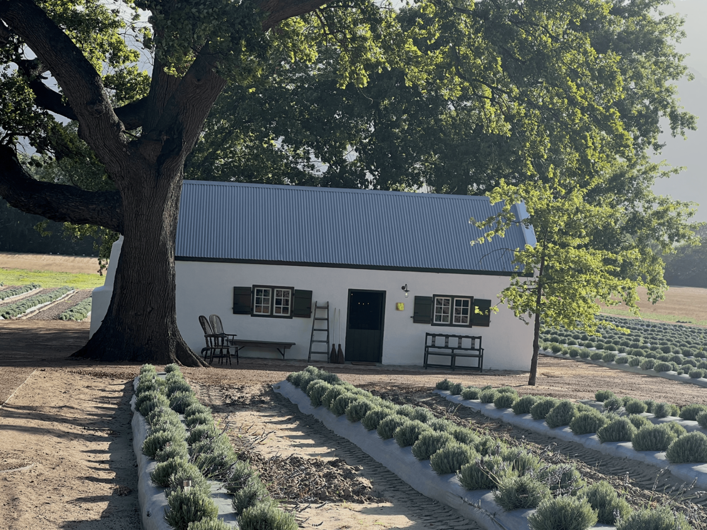

Geel reënpakke in ‘n roesbruin wingerd -
die reuk van ‘n nat hout rokie lok met sy belofte van warmte
na waar wit huise skuil teen die noord-wes se greep
Brakke en snot-neus kindertjies loer by deure uit
wagtend op ‘n respyt in die grou newels wat oor die heuwels vee -
En stil onder die aarde rus die wingerd diep na nog ‘n oes.
En as die hemel blou uitbreek
en die son watervalle teen die berg laat blink;
as ruisende strome die spoelklippe maal
en die somer se slik en mos na die see afspoel;
en heuningbekkies fladder waar fynbos nuut bloei in die
bergbrand se swart:
Dan steeds stil onder die aarde rus die wingerd diep voor nog ‘n oes.